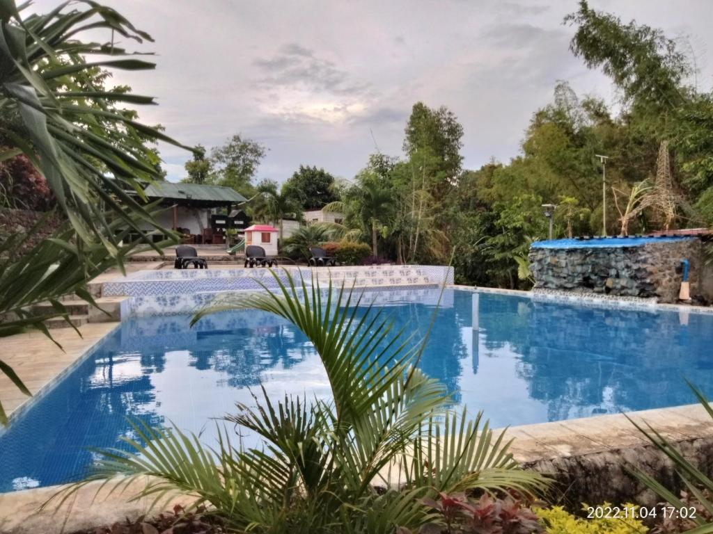

10. Casa De Robles Tanay

Address: Sampaloc Road Sitio Mapunso, Km 60, Tanay, Rizal, Philippines, 1980
Price: Starts from Php 4,500.00/ Night (Family Room - Multiple Beds Family Lake View)
Casa de Robles in Tanay, Rizal, offers a tranquil retreat with various activities to enjoy. Guests can engage in nature walks, bird-watching, and outdoor picnics amidst lush surroundings. The resort provides a swimming pool for relaxation and a playground for children.
Dining options include local specialties served in a scenic garden setting, emphasising fresh ingredients and warm hospitality. Ideal for families, Casa de Robles ensures a peaceful getaway with opportunities for both relaxation and outdoor recreation in the heart of nature.

Splendid service together with wide range of facilities provided will make you complain for nothing during your stay at Casa de Robles Tanay Rizal.
Have an enjoyable and relaxing day at the pool, whether you’re traveling solo or with your loved ones. Get the best deal for finest quality of spa treatment to unwind and rejuvenate yourself. With all facilities offered, Casa de Robles Tanay Rizal is the right place to stay.